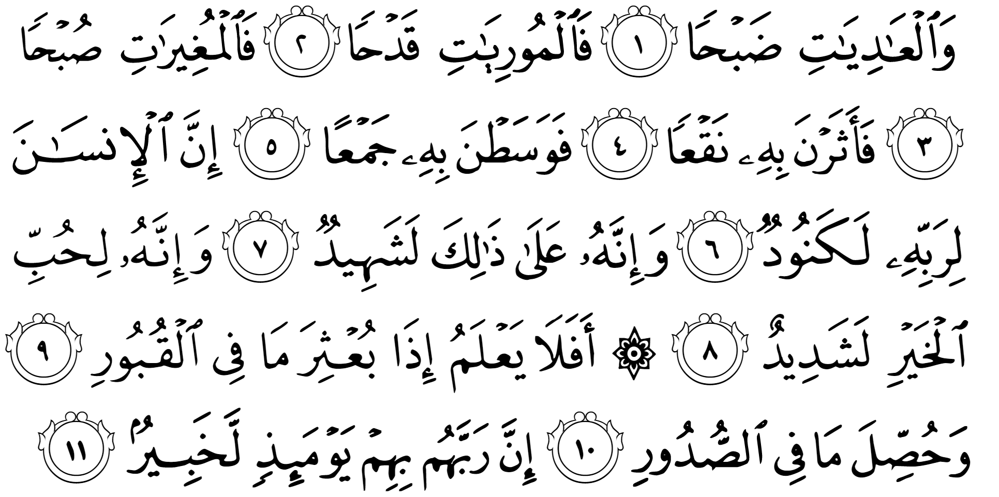
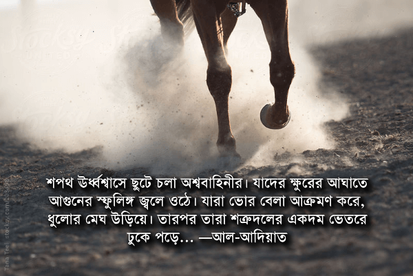

শপথ ঊর্ধ্বশ্বাসে ছুটে চলা অশ্ববাহিনীর। যাদের ক্ষুরের আঘাতে আগুনের স্ফুলিঙ্গ জ্বলে ওঠে। যারা ভোর বেলা আক্রমণ করে, ধুলোর মেঘ উড়িয়ে। তারপর তারা শত্রুদলের একদম ভেতরে ঢুকে পড়ে…।
মানুষ তার রবের অনুগ্রহ স্বীকার করে না। এরা নিজেরা তা ভালো করেই জানে। বেশি-বেশি পাওয়ার প্রতি এদের চরম মোহ।
এরা কি জানে না, যেদিন কবরগুলোর ভেতর থেকে সব বের করে ফেলা হবে? এদের অন্তরে কী আছে সব প্রকাশ করা হবে? সেদিন তারা দেখবে তাদের রব তাদের সম্পর্কে সবই জানেন। —আল-আদিয়াত
দূরে দিগন্তে ঘোড়ায় চড়ে একদল যোদ্ধা ধুলোর মেঘ উড়িয়ে প্রচণ্ড গতিতে ছুটে আসছে আক্রমণ করতে। ঘোড়াগুলো ঊর্ধ্বশ্বাসে দৌড়াচ্ছে। তাদের পায়ের খুরের আঘাতে আগুনের স্ফুলিঙ্গ জ্বলে উঠছে। শত্রুপক্ষের প্রতি তাদের একটুও ভয় নেই। একারণে রাতের বেলা গোপনে আক্রমণ না করে ভোরবেলাই আক্রমণ করতে এসেছে, যখন কিনা শত্রুপক্ষ সম্পূর্ণ প্রস্তুত। ঘোড়াবাহিনীকে আটকানোর জন্য শত্রুপক্ষ প্রতিরক্ষা দাঁড় করালো। কিন্তু ঘোড়াবাহিনী প্রচণ্ড গতিতে আঘাত করে প্রতিরক্ষা চুরমার করে একদম ভেতরে ঢুকে থেমে দাঁড়ালো। শত্রুবাহিনী এখন তাদেরকে চারিদিক থেকে ঘিরে ফেলেছে।…
মানুষ তার রবের অনুগ্রহ স্বীকার করে না।
মানে? কোথা থেকে কী হলো? সেই ঘোড়া বাহিনীর কী হলো? কে জিতলো?

সূরাহ আদিয়াতে আল্লাহ تعالى এক রোমহর্ষক ঘটনার বর্ণনা দিচ্ছিলেন। এক ঘোড়াবাহিনীর আক্রমণের ধারা বর্ণনা চলছে। টানটান উত্তেজনা চলছে। সবাই কান খাড়া করে শুনছে ঘটনা কী ঘটতে যাচ্ছে। তখন তিনি تعالى হঠাৎ করে বিষয় ঘুরিয়ে দিলেন। কুর‘আনে এরকম কয়েকটা সূরাহ’তে আমরা দেখতে পাই যে, আল্লাহ تعالى শুরু করেন একটি ঘটনা দিয়ে। যখন শ্রোতার মনোযোগ পাওয়া যায়, তখন হঠাৎ করে ঘটনার মোড় ঘুরিয়ে নীতিকথাগুলো বলা হয়। যেই কথাগুলো প্রথমে বলে শুরু করলে অনেকেই কোনো পাত্তা দিত না।
মনোযোগহীনতায় ভোগা একটি প্রজন্মকে কিছু শেখানোর জন্য এটা একটি মোক্ষম পদ্ধতি। অনেকটা আজকের দিনে মনোযোগহীন, অস্থির প্রকৃতির কিশোর-তরুণদেরকে কোনো ভিডিও গেমের রোমহর্ষ কঘটনা বলতে বলতে হঠাৎ করে থেমে বলা, “তোমরা তোমাদের বাবা-মা’র প্রতি বড়ই অকৃতজ্ঞ।” প্রথমে এই ধরনের নীতিবাক্য দিয়ে শুরু করলে তারা বিরস মুখে হাই তুলে মোবাইল টেপাটেপি করতে থাকতো। যা বলা হতো তা এক কান দিয়ে ঢুকে আরেক কান দিয়ে বেরিয়ে যেত। কিন্তু ভিডিও গেমের গল্প দিয়ে শুরু করার কারনে তাদের মনোযোগ পাওয়া গেছে। তখন কোনো ভালো কথা বললে আর খেয়াল না করে থাকতে পারবে না।
যেসব বাবা-মা’র ছেলেমেয়েরা কিশোর-তরুণ বয়সে পৌঁছে গিয়েছে, তারা তাদের ছেলেমেয়েদের সাথে কীভাবে কথা বলতে পারেন, তার শিক্ষা রয়েছে এই সূরাহ’তে।
মানুষ তার রবের প্রতি বড়ই অকৃতজ্ঞ
আল্লাহ تعالى বলছেন মানুষ হচ্ছে كنود কানুদ। কানুদ হচ্ছে এমন একজন, যার জন্য ভালো কিছু করা হলেও সে তা স্বীকার করে না। এরা সারাদিন বসে শুধু হিসেব করে তার কত অভাব, কত দুঃখ, কত কিছু পাওয়া হলো না। কিন্তু সে জীবনে কত ভালো কিছু পেয়েছে, সেগুলো নিয়ে ভেবে দেখে না। সুযোগ পেলেই তার ঊর্ধ্বতনদের বা অভিভাবকদের দোষ দিতে থাকে এই বলে যে, তার অমুক নেই, তমুক হলে কত ভালো হতো, তাকে অমুক দেওয়া উচিত ছিল, অন্যের তো ঠিকই তমুক আছে ইত্যাদি।[১][১৬] কিছু উদাহরণ দেই—
ফ্রিজ খুলে সফট ড্রিংক খুঁজছে। ফ্রিজে ফলমূল, ফলের রস, ঠাণ্ডা পানি, দুধ সব দেখা যাচ্ছে। কিন্তু সফট ড্রিংক দেখা যাচ্ছে না। ব্যাস গেল মাথা গরম হয়ে। ধাম করে ফ্রিজের দরজা বন্ধ করে বলল, “ধুর! ড্রিংক থাকে না কেন? এতবার বাজারে যাও, একটা সফট ড্রিংক আনতে পারো না?” —এ হচ্ছে কানুদ।
বাসায় এসে মন খারাপ করে বসে আছে। বন্ধুর হাতে নতুন আমি-ফোন দেখার পর থেকে তার আর কিছু ভালো লাগছে না। নিজের ফোনটার দিকে আর তাকাতেও ইচ্ছে করছে না। দুই বছর আগেই কিনেছে, অথচ সেটাকে এখন বাটখারা মনে হচ্ছে। সারাদিন কম্পিউটারে, ট্যাবলেটে বসে শুধু আমি-ফোন এর রিভিউ পড়ছে, আর ভাবছে, “ইস, ওর কত টাকা। ইচ্ছা হলেই নতুন ফোন কিনতে পারে। আমার যদি আরও টাকা থাকত…” —এ হচ্ছে কানুদ।
টেবিলে খেতে বসে ভাত, মাছ, ডাল, শাকসবজি, তরকারি এত পদের রান্না দেখেও গজগজ করছে, “এই একই ভাত-মাছ-শাকসবজি আর কতদিন? নতুন কিছু দেওয়া যায় না? আমার বন্ধুর বাসায় প্রত্যেক সপ্তাহে নতুন ডিশ রান্না হয়।” —এ হচ্ছে কানুদ।
— আল্লাহ تعالى বলছেন, মানুষ অবশ্যই একেকটা কানুদ। এদেরকে তিনি تعالى অনেক দিয়েছেন। কিন্তু জীবনে যা পেয়েছে তা নিয়ে কৃতজ্ঞতা না দেখিয়ে সবসময় চিন্তা করে সে কী পায়নি, আরও কত কিছু সে পেতে পারত।
এখন, এই কথা বলার আগে ঘোড়ার উদাহরণ কেন দেওয়া হলো তা ভেবে দেখা দরকার। ঘোড়াকে একটু খাবার দিলে এবং যত্ন করলেই সে তার পালকের একান্ত অনুগত হয়ে যায়। এই বিশাল দেহী অত্যন্ত শক্তিশালী প্রাণীটা তার থেকে অনেক দুর্বল মানুষের প্রতি কৃতজ্ঞ হয়ে অনুগত হয়ে চলে। তার পালক যদি তাকে যুদ্ধের মতো ভয়াবহ জায়গায়ও নিয়ে যায়, সেখানেও সে একান্ত বাধ্য অনুগতের মতো নিজের জীবনের ঝুঁকি নিয়ে পালকের নির্দেশ মেনে চলে। তাকে তীর মারা হোক, বর্শা দিয়ে আঘাত করা হোক না কেন, সে কখনই পালককে ফেলে নিজের জানের ভয়ে পালিয়ে যায় না। মৃত্যুর আগ পর্যন্ত সে তার প্রভুর নির্দেশ পালন করে। কৃতজ্ঞতা এবং আনুগত্য কীভাবে দেখাতে হয়, ঘোড়ার কাছ থেকে তা আমাদের শেখার আছে। কিন্তু আফসোস, মানুষ তার রবের প্রতি সামান্যও কৃতজ্ঞতা দেখায় না। তার রবের নির্দেশ মানতে জীবন দেওয়া তো দূরের কথা, একটু কষ্ট করে ভোরে উঠে অজু করে ফজরের নামাজটাও পড়তে পারে না।
অনেকের বেলায় দেখা যায়: স্বাস্থ্য, সম্পত্তি, সংসার, সন্তান, সঙ্গ, সম্মান, সম্ভ্রম—এগুলোর কোনো একটা বা দুটা যদি না থাকে, বা অন্য কারও থেকে কম থাকে, শুরু হয় হতাশা, আক্ষেপ, দুঃখ, আল্লাহকে تعالى নিয়ে অভিযোগ। যেমন ধরুন, কারো স্বাস্থ্য, সম্পত্তি, সন্তান, সঙ্গ, সম্মান, সম্ভ্রম সবই আছে, শুধু সংসারে ঝামেলা। শ্বশুর-শাশুড়ির সাথে প্রায়ই সমস্যা, কটু কথা থেকে ঝগড়া। ব্যাস, তার জীবন যেন বরবাদ হয়ে যায়। যখনি তার সাথে দেখা হয়, আধাঘণ্টা ধরে তার জীবনের করুণ কাহিনীর বর্ণনা। দুই-একদিন পরপর কাউকে ফোন করে এক ঘণ্টা ধরে তার শোকগাঁথা না শোনালে বুকের পাথর যেন নামে না। নামাজে আল্লাহর تعالى কাছে কত অভিযোগ, “ও আল্লাহ تعالى, শেষ পর্যন্ত এই রেখেছিলেন আমার কপালে? আমার বান্ধবীরা কত ভালো শ্বশুর-শাশুড়ি পেয়েছে। আমি কি একটু শান্তির জীবন পেতে পারতাম না?”
যখন আমাদের জীবনে কোনো দিক থেকে কিছু কম থাকে এবং আমরা আশেপাশের মানুষের দিকে তাকিয়ে দেখি: তাদের তো সেটা ঠিকই আছে, তখন প্রশ্ন করা শুরু করি, “তাহলে আমার নেই কেন? আমি কী দোষ করেছি?” —কিন্তু আমরা কখনো খুঁজে দেখি না যে, যাদেরকে দেখে আক্ষেপ করছি, তাদের স্বাস্থ্য, সম্পত্তি, সংসার, সন্তান, সঙ্গ, সম্মান, সম্ভ্রম —এই সবগুলোর মধ্যে কোনোদিকে কিছু একটা কম আছে কিনা। আমরা শুধু হিসেব করি: আমার যা নেই বা যা কম আছে, সেটা আর কার কার আছে। যাদের আছে, “ওরা কতই না সুখী। শুধু আমি হচ্ছি পোড়া কপাল।” খোঁজ নিলে দেখা যায় তারাও একই কথা ভাবছে। তাদের যা নেই, সেটা আমার কেন আছে, তা নিয়ে তাদের কত না হা-হুতাশ।
অনেক বছর আগে আল্লাহ تعالى যখন ইবলিসকে তাঁর সান্নিধ্য থেকে বের করে দিচ্ছিলেন, তখন ইবলিস একটা খুবই গুরুত্বপূর্ণ শপথ করেছিল, যা থেকে তার মানুষকে ধ্বংস করার অন্যতম একটি প্রধান পদ্ধতি সম্পর্কে জানা যায়—
(ইবলিস বলল) “আমি মানুষের কাছে আসবো: ওদের সামনে থেকে, ওদের পেছন থেকে, ওদের ডান দিক থেকে এবং ওদের বাম দিক থেকে। আপনি দেখবেন ওরা বেশিরভাগই কৃতজ্ঞ না।” [আ’রাফ ৭:১৭]
ইবলিস অনেক আগেই বলে গিয়েছিল যে, আমরা বেশিরভাগই আল্লাহর تعالى প্রতি কৃতজ্ঞ হবো না। সে আমাদের ভেতরের অকৃতজ্ঞতাকে বের করে আনবে। আজকে আমরা ওরই কথা প্রতিনিয়ত সত্যি প্রমাণ করে দিচ্ছি।
এখন, আমাদের কারো জীবনে যদি দশটা দিকের মধ্যে তিনটা দিকে সমস্যা থাকে, তাহলে আমরা সেই তিনটা দিকও কেন ভালো হলো না, তা নিয়ে প্রতিনিয়ত আক্ষেপ করতে পারি। অথবা, বাকি সাতটা দিকে আল্লাহ تعالى যে আমাদের যথেষ্ট ভালো রেখেছেন, তা নিয়ে প্রতিদিন তাঁকে تعالى কৃতজ্ঞতা দেখাতে পারি। কোনটা করবো, তা ঠিক করতে এই আয়াতটি কিছুটা অনুপ্রেরণা দেবে—
মনে করে দেখো, তোমাদের প্রভু কথা দিয়েছিলেন, “যদি তোমরা কৃতজ্ঞ হও, তাহলে আমি তোমাদেরকে আরও দিতেই থাকবো। কিন্তু তোমরা যদি অকৃতজ্ঞ হও… আমার শাস্তি প্রচণ্ড কষ্টের।” [ইব্রাহিম ১৪:৭]
এরা নিজেরা তা ভালো করেই জানে
মানুষ যে কানুদ, তার প্রমাণ বের করার জন্য বেশি দূরে যাওয়ার দরকার নেই। সে নিজেই তার অকৃতজ্ঞতার সাক্ষী। মানুষ কানুদ হওয়ার সবচেয়ে বড় সাক্ষী হচ্ছে তার বিবেক। সে নিজেকেই নিজেকে জিজ্ঞেস করে দেখুক যে, সে তার রবের প্রতি যথাযথ কৃতজ্ঞতা দেখিয়েছে কিনা? সে জীবনে কতবার তার রবের প্রতি আস্থা হারিয়ে ফেলেছে? কতবার তার প্রতি অকৃতজ্ঞের মতো আচরণ করেছে?
মানুষ যখন আরও বেশি চায়, তখন তার ভেতরে কিছু একটা তাকে বলে, “কী দরকার? যথেষ্ট তো আছেই। আশেপাশে কত গরিব মানুষ আছে। তাদের জন্য কিছু করা দরকার।” কিন্তু সাথে সাথে কানুদ জেগে ওঠে, “না! আমাকে ওটা পেতেই হবে। না পেলে আমি মানুষকে মুখ দেখাবো কী করে? আমি কত আনন্দ করার সুযোগ পাবো না। আমার সেটা লাগবেই।”
বেশি-বেশি পাওয়ার প্রতি এদের চরম মোহ
মানুষ কানুদ হওয়ার আসল কারণ হচ্ছে এটা — তার আরও চাই। যত পাই, তত চাই। সারাদিন শুধু খাই খাই। নতুন জিনিস কেনার, আরও দামি জিনিস কেনার, আরও বেশি সম্পদ জমানোর কোনো ক্ষান্ত নেই।
“বন্ধুবান্ধব সব এতদিনে নিজের বাড়ি-গাড়ি করে ফেলেছে। আমি এখনও ভাড়াটিয়া বলে মানুষের কথা শুনছি। ওদের বাসায় বেড়াতে গেলে নিজেকে ফকির-ফকির মনে হয়। আর না। এবার বাড়ি কেনার ঋণটা নিতেই হবে।”
“অনেক হয়েছে, আর না। পুরনো গাড়িটা ফেলে দিয়ে এবার একটা নতুন গাড়ি কিনবোই। প্রতিবেশির বড় গাড়িটার পাশে আমার গাড়িটাকে একটা টেম্প্যু মনে হয়।”
“আমার পুরনো আমি-ফোনটা মানুষের সামনে বের করতে লজ্জা লাগে। সবাই যেন কেমন-কেমন করে তাকায়। আজকাল সবার হাতে আমি-ফোন ৭। পাশের বাড়ির কাজের মেয়েটার হাতেও আমার থেকে নতুন মডেলের ফোন! কী লজ্জার কথা!”
একসময় আমরা অনেক কাটখড় পুড়িয়ে বাড়ি কিনি। মানুষকে গর্ব করে দেখাই নতুন কেনা দামি আসবাবপত্র, ঝকঝকে বাথরুম। কিন্তু কয়েক বছর না যেতেই সেই স্বপ্নের বাড়ির উপর থেকে মন উঠে যায়। বেড়াতে গিয়ে অন্যের বাড়ির আসবাবপত্র, বাথরুম দেখে আফসোস শুরু হয়। আবার হয়তবা একদিন শখের ব্র্যান্ডের গাড়ি কিনি। মানুষকে বলে বেড়াই, “এবার গাড়িটা কিনেই ফেললাম। বেশি না, মাত্র ৩৫ লাখ। সস্তায় পেয়ে গেছি, কী বলেন?” তারপর কয়েক বছর না যেতেই বন্ধুর নতুন গাড়ির সামনে সেটাকে লোহালক্কড় মনে হয়। একসময় সবাইকে গর্ব করে দেখিয়ে বেড়ানো নতুন মোবাইল ফোনটা দুই বছর না যেতেই টেবিল থেকে সরিয়ে পকেটে লুকিয়ে রাখতে হয়। এত চেষ্টা করে এতসব পাওয়ার পরেও বেশিদিন প্রাপ্তির সুখ ধরে রাখা যায় না। শুরু হয় আবার প্রতিযোগিতার দৌড়।
ধর্মহীনরা বিশ্বাস করে: সম্পদ মানেই সুখ এবং সফলতা। যার যত সম্পদ, সে তত সুখে থাকবে, সে তত সফল বলে গণ্য হবে। কিন্তু একজন মুসলিম কখনও এভাবে চিন্তা করে না। মুসলিমদের কাছে সম্পদ হচ্ছে পরীক্ষা। যত বেশি সম্পদ, তত বেশি দায়িত্ব, তত বেশি পরীক্ষা, তত বেশি জান্নাত হারিয়ে ফেলার উপলক্ষ। মুসলিমরা জানে তাদের বাড়ি, গাড়ি, জমি, একাউন্টে জমা টাকার প্রত্যেকটির হিসেব চাওয়া হবে। প্রশ্ন করা হবে: এগুলো জমিয়ে রেখেছিলাম কি শুধু নিজের সুখের জন্য, নাকি এগুলো ইসলামের জন্য কাজে লাগিয়েছি?
সম্পদের পরীক্ষায় ফেল করলে সর্বনাশ। কুর‘আনে ভয়ংকর সব শাস্তির আয়াত রয়েছে সম্পদশালীদের ঠিকমতো সম্পদ ব্যবহার না করার পরিণাম বর্ণনা করে।
এরা কি জানে না, যেদিন কবরগুলোর ভেতর থেকে সব বের করে ফেলা হবে? এদের অন্তরে কী আছে সব প্রকাশ করা হবে? সেদিন তারা দেখবে তাদের রব তাদের সম্পর্কে সবই জানেন।
কবর হচ্ছে অস্থায়ী ঠিকানা। একদিন কবর থেকে সব ছিটকে বেরিয়ে আসবে। بُعْثِرَ مَا فِي الْقُبُورِ — কবরের ভেতরে যা ছিল, সব ঝেড়ে বের করা হবে। তারপর তাদের বিচার শুরু হবে। وَحُصِّلَ مَا فِي الصُّدُورِ — প্রত্যেকের বুকের ভেতরে কি আছে, তা সব বের করা হবে।[১৬] কিছুই গোপন থাকবে না। আমরা কাকে দেখে নাক সিটকে ছিলাম, কাকে দেখে হিংসা করেছিলাম, কাকে নিয়ে বাজে চিন্তা করেছিলাম, কত কুকর্ম করার পরিকল্পনা করেছিলাম, কত অশ্লীল কাজ মনে মনে রিহার্সাল করেছিলাম —সব বের করে আনা হবে। সেদিন আমরা গিয়ে দেখবো আমাদের যাবতীয় চিন্তা, কামনা-বাসনা, লোভ-লালসা, কাজকর্ম সব কিছু সম্পর্কে আল্লাহ تعالى সবই জানতেন।
আসুন আমরা কু’রআনের আয়াতগুলো নিয়ে গভীরভাবে চিন্তা করি। আল্লাহ تعالى আমাদেরকে কু’রআন দিয়েছেন এক আত্মিক নিরাময় হিসেবে। আমাদের অনেক মানসিক সমস্যার সমাধান রয়েছে কু’রআনে। নিয়মিত বুঝে কু’রআন পড়লে আমরা খুব সহজেই ওষুধের উপর আমাদের নির্ভরতা কমিয়ে আনতে পারব। স্ট্রেস-ডিপ্রেশন থেকে মুক্ত হয়ে শারীরিক এবং মানসিকভাবে সুস্থ জীবন যাপন করতে পারব — ইন শাআ আল্লাহ।
[১] বাইয়িনাহ এর কু’রআনের তাফসীর। [২] ম্যাসেজ অফ দা কু’রআন — মুহাম্মাদ আসাদ। [৩] তাফহিমুল কু’রআন — মাওলানা মাওদুদি। [৪] মা’রিফুল কু’রআন — মুফতি শাফি উসমানী। [৫] মুহাম্মাদ মোহার আলি — A Word for Word Meaning of The Quran [৬] সৈয়দ কুতব — In the Shade of the Quran [৭] তাদাব্বুরে কু’রআন – আমিন আহসান ইসলাহি। [৮] তাফসিরে তাওযীহুল কু’রআন — মুফতি তাক্বি উসমানী। [৯] বায়ান আল কু’রআন — ড: ইসরার আহমেদ। [১০] তাফসীর উল কু’রআন — মাওলানা আব্দুল মাজিদ দারিয়াবাদি [১১] কু’রআন তাফসীর — আব্দুর রাহিম আস-সারানবি [১২] আত-তাবারি-এর তাফসীরের অনুবাদ। [১৩] তাফসির ইবন আব্বাস। [১৪] তাফসির আল কুরতুবি। [১৫] তাফসির আল জালালাইন। [১৬] লুঘাতুল কুরআন — গুলাম আহমেদ পারভেজ। [১৭] তাফসীর আহসানুল বায়ান — ইসলামিক সেন্টার, আল-মাজমাআহ, সউদি আরব [১৮] কু’রআনুল কারীম – বাংলা অনুবাদ ও সংক্ষিপ্ত তাফসীর — বাদশাহ ফাহাদ কু’রআন মুদ্রণ কমপ্লেক্স। [১৯] তাফসির আল-কাবির। [২০] তাফসির আল-কাশ্শাফ।